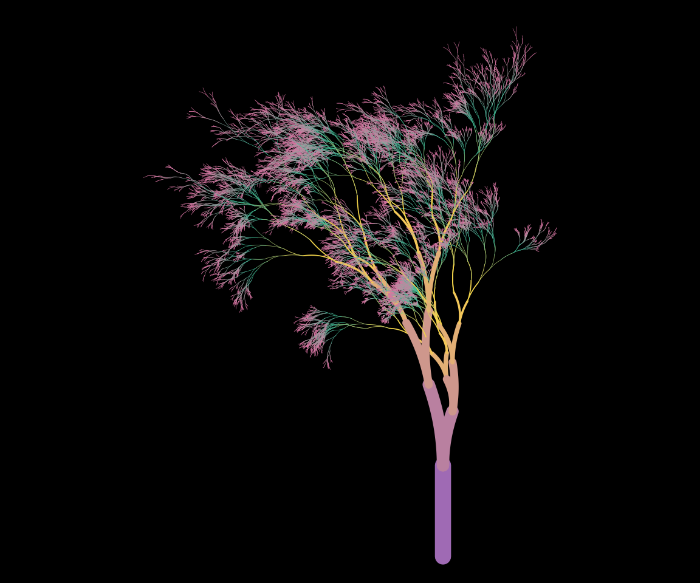
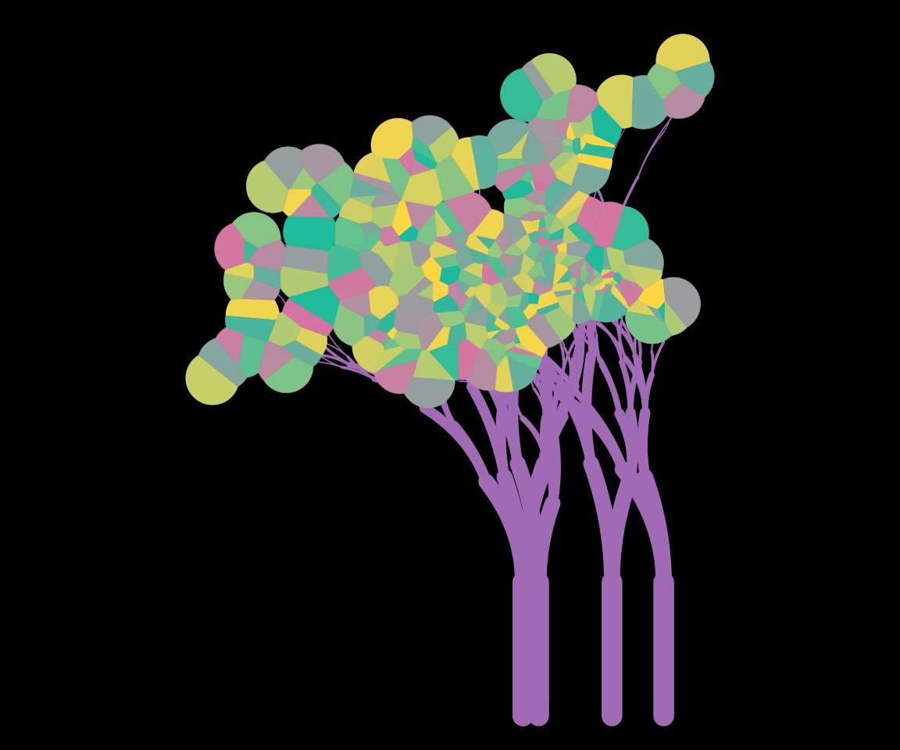

The getting started article showed how to modify the appearance of the output by specifying the background and palette arguments. Changing these arguments will change the colours to the plot, but only the colours. It does not affect the way the plot function interprets the underlying data structure. However, given that the plots are created using ggplot2, there is a lot more flexibility in the the kind of images that can be created. The flametree_plot() function contains a style argument that alters the ggplot2 code used to create the image, and can have a much larger effect on the resulting image. I’ll walk through the different styles in this article, using the following palette:
shades <- c("#A06AB4", "#FFD743", "#07BB9C", "#D773A2")Setting style = "plain" (the default) creates an output that resembles the original “flametree” images: colours vary along the body of the trees, and no “leaves” are drawn.
flametree_grow(time = 14) %>%
flametree_plot(
palette = shades,
style = "plain"
)
Setting style = "voronoi" creates a plot where the tree bodies are uniform in colour, and coloured “leaves” are drawn at the top of the trees using a Voronoi tesselation of the locations of the terminal nodes. Note that computing the tesselation is computationally expensive, and this will likely produce errors if there are too many nodes.
flametree_grow(time = 6, trees = 5) %>%
flametree_plot(
palette = shades,
style = "voronoi"
)
The style = "nativeflora" style creates a plot in which tree bodies are rendered as thin segments, with a proportion of those segments removed, and small points are drawn at the end of each terminal segment.
flametree_grow(
time = 10,
trees = 12,
shift_x = spark_nothing()
) %>%
flametree_plot(
palette = shades,
style = "nativeflora"
)Setting style = "wisp" is similar to the “nativeflora” style, but no segments are removed, and the tree body is wider at the base.
flametree_grow(time = 14) %>%
flametree_plot(
palette = shades,
style = "wisp"
)Setting style = "minimal" produces a variant that does not use curved segments.
flametree_grow(time = 10, trees = 5) %>%
flametree_plot(
palette = shades,
style = "minimal"
)Finally, if the user sets style = "themegray" the result will be a plot that uses the traditional gray theme used in ggplot2.
flametree_grow(time = 10, trees = 5) %>%
flametree_plot(
palette = shades,
style = "themegray"
)